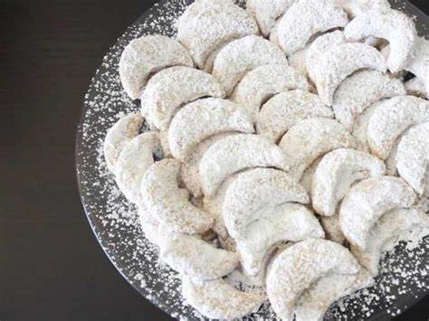

Resep kue kering Putri Salju

Bahan-Bahan:
- 200 gram Margarin
- 60 gram Gula halus
- 2 butir Kuning telur
- 100 gram Keju parut
- 30 gram Susu bubuk
- 60 gram Tepung maizena
- 200 gram Tepung terigu protein sedang
Taburannya :
- Gula donat secukupnya boleh juga pakai gula halus sesuai selera
Langkah-Langkah:
- Langkah 1 :
- Masukkan margarin kedalam wadah,Masukkan gula halus Aduk kedua bahan hingga tercampur rata
- Langkah 2 :
- Pisahkan kuning telur dari bagian putih telurnya ,Masukkan kuning telur kedalam wadah
- Langkah 3 :
- Masukkan keju parut,Mixer semua bahan hingga tercampur rata,Masukkan susu bubuk
- Langkah 4 :
- Masukkan tepung maizena,Masukkan tepung terigu secara bertahap. Tahap pertama masukkan setengah tepung terigu lalu ayak,Aduk hingga tercampur rata.
- Langkah 5 :
- Masukkan lagi sisa tepung terigu,Aduk lagi hingga tercampur rata Sediakan alas adonan lalu taburi tepung terigu (boleh juga pakai alas adonan lain).
- Langkah 6 :
- Bentuk adonan sesuai selera (boleh juga pakai Cetakkan kue kering untuk membentuknya jika tidak punya Cetakkan boleh cetak dengan menggunakan tangan manual)
- Langkah 7 :
- Jika sudah selesai di bentuk lalu taro adonan kedalam loyang yang sudah diolesin margarin dan dialasi dengan kertas roti
- Langkah 8 :
- Panaskan oven selama 10 menit,Jika sudah panas langsung masukkan adonan kue keringnya
- Langkah 9 :
- Panggang selama 35 menit dengan suhu 180°c (sesuaikan dengan suhu oven masing²)
- Langkah 10 :
- Jika sudah matang keluarkan dari oven
- Langkah 11 :
- Masukkan gula donat secukupnya kedalam wadah (boleh juga pakai gula halus sesuai selera)
- Langkah 12 :
- Masukkan kue kering kedalam gula donat lalu aduk hingga tercampur rata